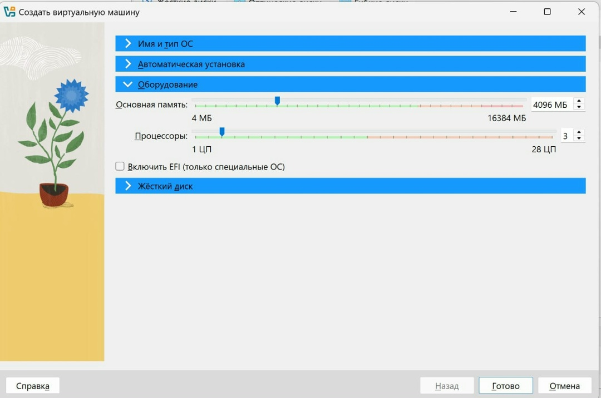
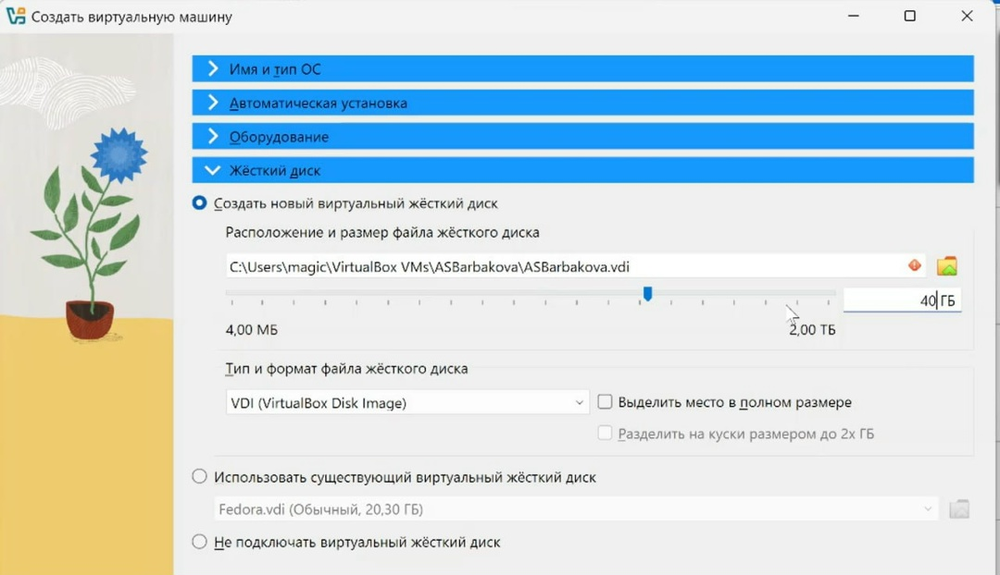
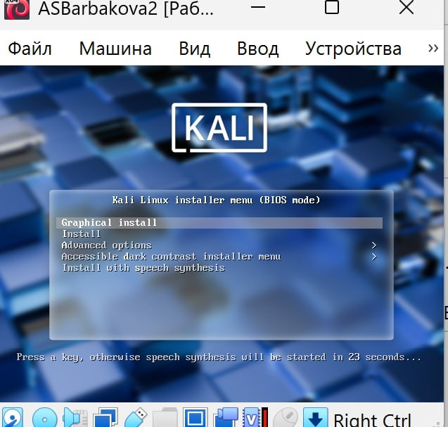
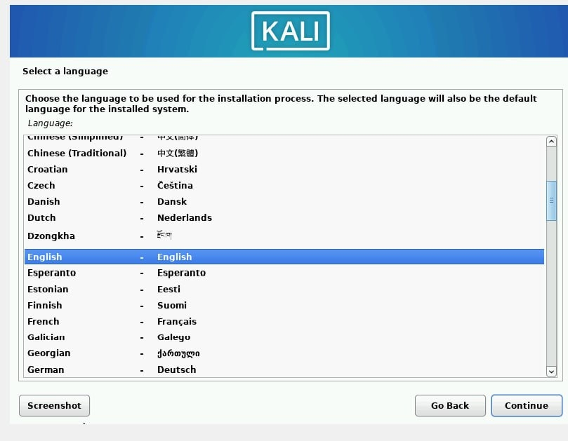
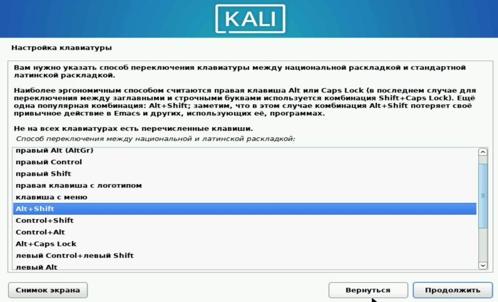
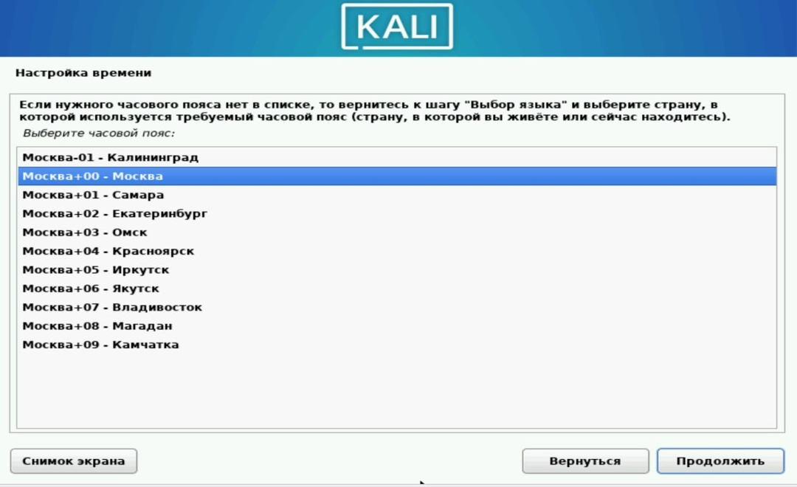
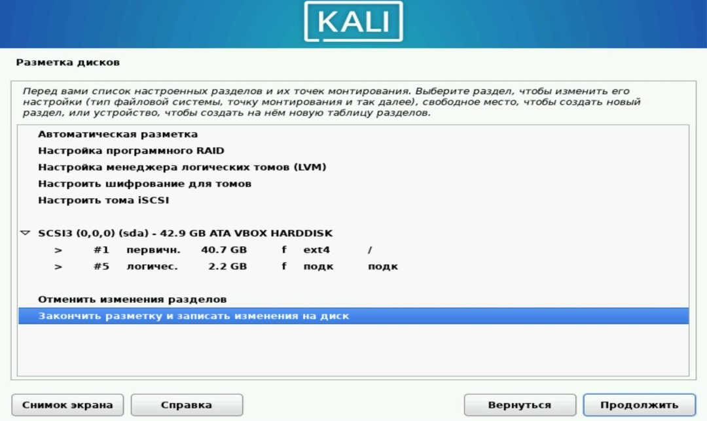
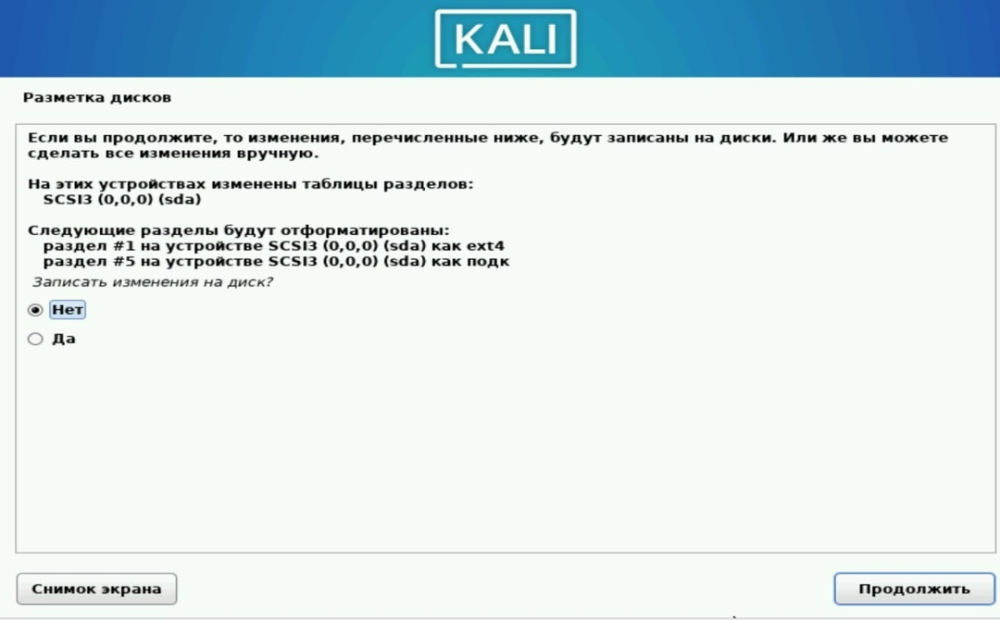
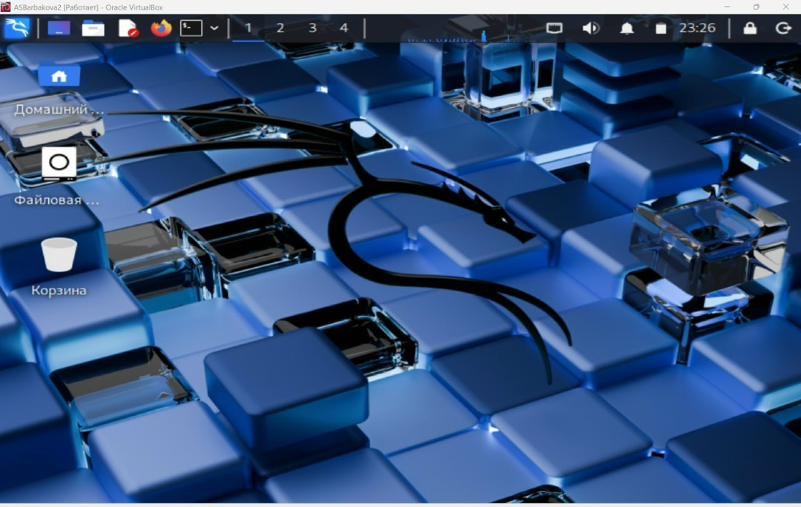

Индивидуальный Проект
Этап 1
![]()
2026-03-06
Информация
Докладчик
- Барбакова Алиса Саяновна
- НКАбд-01-24
- Российский университет дружбы народов им. П. Лумумбы
- 1132246727@rudn.ru
Цель
Приобретение практических навыков по установке операционной системы Linux на виртуальную машину.
Задание
- Установить дистрибутив Kali Linux на виртуальную машину VirtualBox.
Теоретическое введение
Kali Linux — это дистрибутив Linux на основе Debian с открытым исходным кодом, предназначенный для расширенного тестирования на проникновение, проверки уязвимостей, аудита безопасности систем и сетей.
Сферы применения дистрибутива:
Тестирование на проникновение. Kali Linux широко используется в области тестирования безопасности, чтобы оценить уязвимости в компьютерных системах, сетях и приложениях. ОС предоставляет множество инструментов для обнаружения уязвимостей.
Цифровое расследование. Дистрибутив предоставляет инструменты для сбора и анализа цифровых данных, включая восстановление удаленных файлов, извлечение метаданных, анализ системных журналов и т.д.
Обратная разработка. Kali Linux содержит инструменты, которые помогают разработчикам анализировать готовое программное обеспечение, чтобы понять его работу, выявить уязвимости или разработать альтернативные реализации.
Безопасность беспроводных сетей. У ОС есть набор инструментов для проверки и обеспечения безопасности беспроводных сетей. Kali Linux поддерживает анализ беспроводных протоколов, перехват и дешифрование сетевого трафика, а также атаки на беспроводные сети.
Защита информации. Kali Linux также может использоваться для обеспечения безопасности информации, включая мониторинг сетевой активности, обнаружение вторжений, защиту от DDoS-атак и настройку брандмауэров.
Выполнение лабораторной работы
Открываю VirtualBox, нажимаю создать, в появившемся окне выбираю тип операционной системы Linux, версия - Debian, задаю имя машины
Настраиваю основную память и количество выделяемых процессоров, необходимое для работы без помех (рис. 1).

Настройка оборудования виртуальной машины
2
Настраиваю размер виртуального жесткого диска, выбираю 40ГБ (рис. 2).

Настройка размера виртуального жесткого диска
3
Соглашаюсь с получившимися характеристиками, жму готово
Подключаю ранее скачанный образ диска
В окне установки Kali выбираю графическую установку (рис. 3).

Выбор способа установки
4
Выбираю язык, на котором будет установка
В местоположении выбираю Российскую Федерацию
Выбираю раскладку клавиатуры (рис. 4).

Настройка клавиатуры
5
Выбираю комбинацию горячих клавиш для переключения раскладки клавиатуры (рис. 5).

Настройка переключения раслкадки
6
Ввожу имя компьютера
Ввожу имя домена
Ввожу имя пользователя, у которой будут права суперпользователя
Это же имя по умолчанию предлагается как имя моей учетной записи
Ввожу пароль для созданного пользователя
Выбираю часовой пояс (рис. 6).

Настройка времени
7
Теперь установщик проверяет диски и предлагает различные варианты, в зависимости от настроек. Созданный виртуальный диск чистый, поэтому я выбираю «весь диск»
Убеждаюсь, что выбран нужный виртуальный диск, продолжаю настройку разметки дисков
Далее установщик предлагает выбрать схему разметки, ее я оставляю по умолчанию «все файлы в одном разделе»
После этого этапа надо подтвердить окончание разметки дисков, чтобы изменения были записаны (рис. 7).

Разметка дисков
8
Затем установщик дает еще раз просмотреть конфигурацию диска, прежде чем внести необратимые изменения (рис. 8). После этого этапа начнется установка.

Разметка дисков
9
Далее я могу выбрать, какие метапакеты (пустые пакеты, которые только описывают зависимости) я хотите установить. Выбор по умолчанию установит стандартную систему Kali Linux, поэтому я не хочу менять выбор
Подтверждаю установку системного загрузчика GRUB (Загрузчик операционной системы от проекта GNU программа для управления процессом загрузки), также выбираю виртуальный диск, на который устанавливать GRUB
10
Завершаю установку
Проверяю, что в носителях теперь пусто
Вхожу в систему от имени своего пользователя
Вход в систему выполнен успешно, как и ее загрузка (рис. 9).

Успешная загрузка системы
Выводы
Приобрела практические навыки по установке операционной системы Linux на виртуальную машину. Установила дистрибутив Kali LInux на VirtualBox.
Список литературы. Библиография.
[1] Официальная документация по устновке Kali Linux на VirtualBox